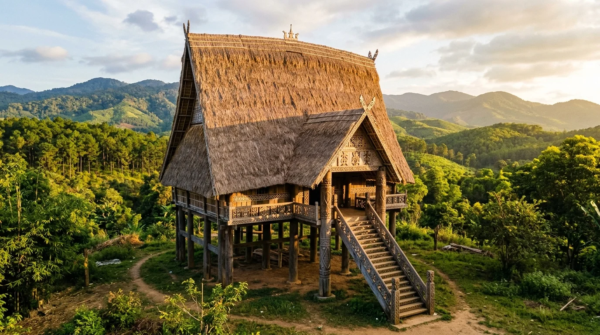
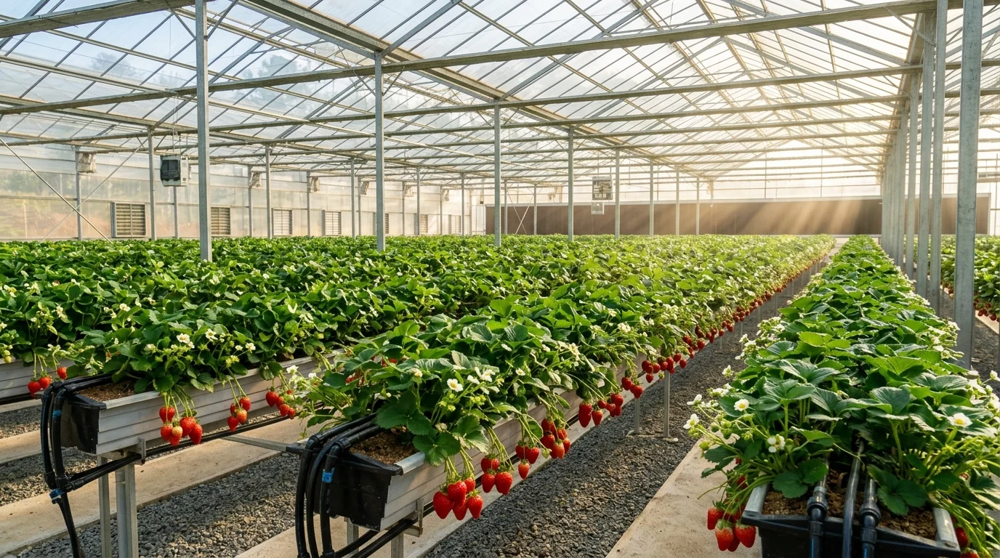

Nằm cheo leo trên dải cao nguyên phía Đông Bắc tỉnh Kon Tum ở độ cao hơn 1.200m so với mực nước biển, Măng Đen được mệnh danh là "Nàng thơ giữa đại ngàn Tây Nguyên" hay "Đà Lạt thứ hai" với bạt ngàn rừng thông đỏ nguyên sinh, không khí se lạnh mịt mùng sương sớm và huyền thoại thiêng liêng "Bảy hồ ba thác" (Thất hồ tam thác) của đồng bào người Mơ Nâm.
Mỗi dịp cuối năm từ tháng 12 đến tháng 2, Măng Đen khoác lên mình tấm áo hồng phớt diễm lệ khi hàng vạn gốc hoa mai anh đào đồng loạt bung nở rực rỡ bên mặt hồ Đắk Ke phẳng lặng như gương. Nơi đây đã được Thủ tướng Chính phủ phê duyệt quy hoạch trở thành Khu du lịch quốc gia theo Quyết định số 1492/QĐ-TTg ngày 29/11/2023.
🧭 2. Khám Phá 8 Tọa Độ Check-in & Sử Tích Măng Đen
(Nhấp vào từng ô thắng cảnh để mở rộng hình ảnh toàn cảnh và chi tiết huyền tích lịch sử bản địa)

Thác Pa Sỹ — Dải Lụa Trắng Giữa Đại Ngàn Nguyên Sinh
Dòng thác 45m đổ tung bọt trắng xóa giữa rừng rậm nguyên sinh, gắn liền với huyền tích 'ba nguồn suối tụ hội' và khu vườn tượng gỗ dân gian Tây Nguyên độc đáo.

Hồ Đắk Ke (Hồ Toong Rơ Pông)
Mặt hồ trong xanh ngọc bích phẳng lặng in bóng hàng thông già và những vạt hoa mai anh đào hồng thắm rực rỡ ven hồ mỗi độ đông về.

Làng Văn Hóa Cộng Đồng Kon Bring
Ngôi nhà Rông mái tranh cao vút sừng sững giữa thung lũng, nơi bảo tồn nguyên vẹn nhịp sống, tiếng cồng chiêng và nét văn hóa thổ cẩm người Mơ Nâm.

Đại Ngàn Rừng Thông & Đồi Sim Măng Đen
Cung đường uốn lượn xuyên qua những rặng thông cổ thụ ngút ngàn chìm trong màn sương mây mờ ảo, đón luồng nắng sớm mai tuyệt mỹ tựa cổ tích.

Trung Tâm Hành Hương Đức Mẹ Măng Đen
Bức tượng Đức Mẹ nép mình dưới bóng rừng thông cổ thụ thanh tịnh, biểu tượng thiêng liêng xoa dịu nỗi đau và nguyện cầu bình an.

Cung Đường Hoa Mai Anh Đào Rực Rỡ
Hàng vạn gốc hoa mai anh đào nở rộ hồng rực góc trời cao nguyên vào dịp cuối năm, biến thị trấn mờ sương thành thiên đường thơ mộng.

Đèo Măng Đen — Khúc Vĩ Cầm Hùng Vĩ
Cung đèo 12km uốn lượn ngoạn mục giữa rừng già nguyên sinh và thông reo, ranh giới chuyển tiếp diệu kỳ lên cao nguyên ôn đới mát lạnh.

Vườn Dâu Tây Nông Nghiệp Công Nghệ Cao
Những luống dâu tây trĩu quả chín mọng đỏ rực trong nhà kính công nghệ cao, trải nghiệm nông nghiệp sinh thái ngọt lành vùng cao xứ lạnh.
✈️ 3. Hướng Dẫn Di Chuyển Chuẩn Xác Từ Hà Nội
1. Đường hàng không kết hợp đường bộ (Lộ trình nhanh nhất: ~4 giờ)
Măng Đen thuộc tỉnh Kon Tum chưa có sân bay thương mại riêng, du khách từ Hà Nội di chuyển tối ưu nhất theo phương án:
- Chặng 1: Bay từ Hà Nội đi Pleiku (Gia Lai): Khởi hành từ Sân bay Quốc tế Nội Bài (HAN) đáp xuống Sân bay Pleiku (PXU). Thời gian bay thẳng: 1 giờ 35 phút (các hãng Vietnam Airlines, Vietjet Air khai thác hàng ngày).
- Chặng 2: Xe đón từ Sân bay Pleiku đi Măng Đen (~105km):
• Đoạn Pleiku → TP Kon Tum: Dài ~50km theo Quốc lộ 14 (thời gian di chuyển: 1 tiếng).
• Đoạn TP Kon Tum → Thị trấn Măng Đen: Dài ~55km theo Quốc lộ 24 vượt đèo Măng Đen (thời gian di chuyển: 1 tiếng 15 phút).
• Phương tiện: Taxi sân bay trọn gói (khoảng 800.000 – 1.000.000 VNĐ/xe 4-7 chỗ), hoặc đi xe bus từ Pleiku sang Kon Tum rồi bắt xe buýt/xe khách tuyến Kon Tum – Măng Đen (giá vé 50.000 VNĐ/lượt).
2. Đường bộ xuyên Việt (~1.080km từ Hà Nội)
Dành cho các phượt thủ hoặc đoàn xe gia đình thích hành trình du lịch đường dài xuyên Việt:
- Tuyến đường: Hà Nội → Cao tốc Bắc – Nam phía Đông (CT01) hoặc Đường Hồ Chí Minh → Quảng Trị → Đà Nẵng → Quảng Ngãi → Rẽ Quốc lộ 24 vượt đèo Măng Đen lên Kon Plông (hoặc qua Quốc lộ 14B từ Đà Nẵng qua Đắk Glei về Kon Tum).
- Thời gian di chuyển: Khoảng 20 – 22 giờ lái xe liên tục (thường chia làm hành trình 2 ngày 1 đêm có dừng nghỉ đêm tại Quảng Bình hoặc Đà Nẵng).
🎟️ 4. Bảng Giá Vé & Dịch Vụ Tham Quan Mới Nhất
| Điểm tham quan / Dịch vụ | Chi phí tham khảo | Ghi chú & Trải nghiệm thực tế |
|---|---|---|
| Khu du lịch sinh thái Thác Pa Sỹ | 50.000 VNĐ / người lớn 25.000 VNĐ / trẻ em |
Vé vào cổng tham quan 45m thác nước, cầu gỗ và Vườn tượng gỗ dân gian Tây Nguyên (áp dụng theo biểu giá điều chỉnh từ cuối năm 2026; trẻ dưới 1m miễn phí) |
| Hồ Đắk Ke (Hồ Toong Rơ Pông) | Miễn phí vào cổng | Tự do tản bộ ngắm hoa mai anh đào quanh hồ (Dịch vụ chèo thuyền kayak / đạp vịt tính phí riêng: ~50.000 – 100.000 VNĐ/giờ) |
| Làng văn hóa du lịch cộng đồng Kon Bring | Miễn phí vào cổng | Tự do tham quan Nhà Rông, giao lưu người Mơ Nâm (xem biểu diễn cồng chiêng lửa trại nhóm đông theo thỏa thuận với bản) |
| Trung tâm hành hương Đức Mẹ Măng Đen | Miễn phí vào cổng | Điểm chiêm bái tâm linh thanh tịnh giữa đồi thông (vui lòng giữ trật tự và trang phục lịch sự) |
| Các đồi thông & Cung đường hoa mai anh đào | Miễn phí vào cổng | Không gian công cộng tự do chụp ảnh check-in (chú ý bảo vệ cây xanh, không bẻ cành ngắt hoa) |
| Trang trại Dâu tây & Nông nghiệp công nghệ cao | Miễn phí vào cổng | Tự do chụp ảnh trong nhà kính; dâu tây tự hái cân tính tiền theo giá thị trường (khoảng 250.000 – 350.000 VNĐ/kg tùy loại) |
🍲 5. Lưu Trú & Tinh Hoa Ẩm Thực Đại Ngàn Măng Đen
1. Gợi ý điểm lưu trú tại Măng Đen
- Homestay phong cách gỗ giữa rừng thông: La Maison Homestay, Sóc's House, Chàng Sen, Măng Đen Lữ Quán... Không gian mộc mạc ấm áp, lò sưởi củi, ban công nhìn ra đồi thông sương phủ, giá từ 350.000 – 700.000 VNĐ/đêm.
- Resort & Khách sạn tiện nghi: Golden Boutique Hotel Măng Đen, Đắk Ke Măng Đen Resort, Khách sạn Tự Do Măng Đen... không gian sang trọng, dịch vụ chuyên nghiệp, giá từ 900.000 – 1.800.000 VNĐ/đêm.
- Glamping & Cắm trại ven hồ / đồi thông: Trải nghiệm ngủ lều sang trọng đón gió lạnh cao nguyên, ngắm bầu trời đầy sao và sương sớm mai.
2. Tinh hoa ẩm thực vùng cao Măng Đen

🗓️ 6. Lịch Mùa Hoa & Mẹo Du Lịch Bản Địa
1. Lịch các mùa đẹp nhất trong năm tại Măng Đen
- Tháng 12 – Tháng 1 (Mùa Hoa Mai Anh Đào Rực Rỡ Nhất): Mùa đẹp và đông vui nhất năm. Cả thị trấn bừng sáng trong sắc hồng mai anh đào, thời tiết se lạnh khô ráo, nắng vàng chan hòa và sương mù bồng bềnh lúc sớm mai.
- Tháng 2 – Tháng 4 (Mùa Hoa Ban Trắng & Hoa Sim Rừng): Hoa ban trắng và hoa mua, hoa sim rừng đua nhau nở rộ trên các sườn đồi; mùa thu hoạch dâu tây công nghệ cao chín rộ.
- Tháng 5 – Tháng 9 (Mùa Hè Xanh Tránh Nóng & Măng Rừng): Nhiệt độ chỉ khoảng 20 – 24°C, thời điểm lý tưởng để trốn cái nóng gay gắt của đồng bằng, ngắm thác Pa Sỹ cuồn cuộn nước trắng và thưởng thức măng le tươi non.
- Tháng 10 – Tháng 11 (Mùa Lúa Chín Ruộng Bậc Thang & Hoa Dã Quỳ): Thung lũng Kon Bring vàng óng ả mùa gặt, những vạt hoa dã quỳ vàng rực nở dọc quốc lộ 24.
⚠️ Lưu ý quan trọng khi du lịch Măng Đen:
• Trang phục giữ ấm: Nhiệt độ ban đêm và rạng sáng tại Măng Đen thường giảm sâu xuống 12 – 15°C kèm sương mù dày, hãy luôn chuẩn bị áo khoác ấm, khăn choàng cổ và găng tay.
• Lái xe vượt đèo Măng Đen (QL24): Đèo dốc quanh co và thường xuyên có sương mù che khuất tầm nhìn, lái xe cần đi chậm, bật đèn sương mù và giữ khoảng cách an toàn.
• Tôn trọng không gian linh thiêng & văn hóa bản địa: Khi vào chiêm bái tại Trung tâm hành hương Đức Mẹ Măng Đen hoặc thăm Nhà Rông làng Kon Bring, cần ăn mặc kín đáo lịch sự, không chạm vào các hiện vật thờ cúng và xin phép trước khi chụp ảnh chân dung người già, trẻ nhỏ đồng bào.